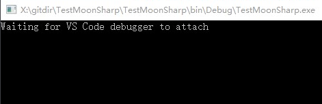
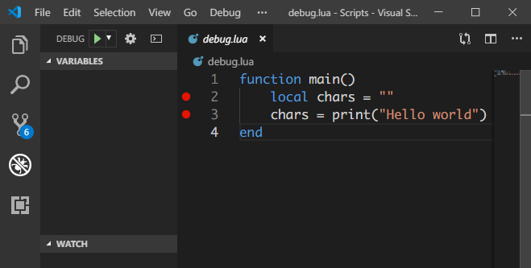
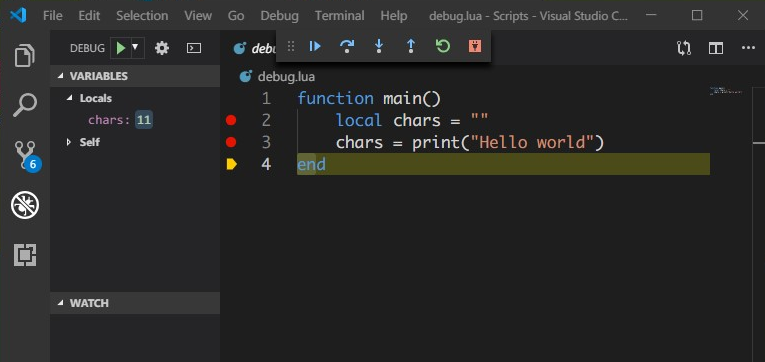
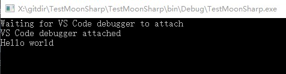
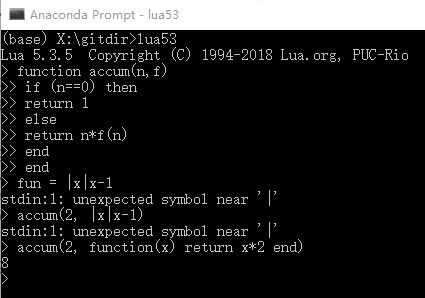

0x00
MoonSharp 是一个支持使用 C# 调用 Lua 的类库，这个系列是通过官网的教程来入门类库与 Lua。
如果有需要请配合我的代码食用。
这次的从一知到半解只讲 MoonSharp 的 Debug部分，做一个专一的 blog 吧。
0x01 Debugger integration
MoonSharp 提供了两个开箱即用的调试器：
- VS Code （更简单易用，但相应地只支持本地进行调试）
- 在支持 Flash 的浏览器中运行的远程调试器
VS Code debugger
需要安装扩展MoonSharp Debug extension for VsCode。要进行调试，还需要引用 MoonSharp.VsCodeDebugger.dll（NuGet 或手动添加），如果使用 Unity 包，那已经包含在其中了。
1 | Install-Package MoonSharp.Debugger.VsCode |
引用了动态链接库后，简单设置一下就可以了：
1 | //using MoonSharp.VsCodeDebugger; |
可以不受限地将多个脚本附加到调试器上。通过设置 MoonSharpVsCodeDebugServer 对象的 Current 属性，可以在一个新的调试器添加后选择首先被调试的脚本。VsCode 中的调试器插件可以使用命令行，用户可以通过“!list”和“!switch”命令切换脚本。
当不再需要调试某个脚本时，可以调用 MoonSharpVsCodeDebugServer 对象的 Detach 方法断开调试此脚本的调试器，释放内存。
VsCode 调试器以来文件系统，如果找不到文件，则会动态保存脚本内容到临时文件（当文件目录与加载应用程序的相对路径不同，脚本为嵌入资源，或者使用 LoadString 加载文件时同样）。AttachToScript 的第三个参数可以映射到文件名。
1 | var server = new MoonSharpVsCodeDebugServer().Start(); |
也可以使用 LoadString 中 friendlyName 参数来避免这个问题。
1 | var server = new MoonSharpVsCodeDebugServer().Start(); |
百看不如一练，一直说 VSCode 多强多强，今天我调试试试了（写个傻瓜版跟着做）。
首先准备调试代码，直接在前面教程中建立的 Scripts 文件夹下新建一个 debug.lua 用来调试。
1 | -- debug.lua |
脚本中只有一个 main 函数，并调用了一个 print，利用前面学到的，这里将 print 方法重定向为自定义的方法：
1 | public static void TestVsDebugger() |
代码中与前面讲到的唯一的不同的是从文件中读取，需要注意的就只是读取时的路径，使用绝对路径比较保险，相对路径的话，注意是相对于生成的可执行程序的位置。
接下来为了进行调试，工程中引用 MoonSharp.VsCodeDebugger.dll，VsCode 中安装调试插件。
添加脚本文件夹中的 .vscode 配置文件夹，新建 launch.json：
1 | { |
万事俱备，但是，手速不太够，我们需要在工程中添加一个等待调试连接的方法：
1 | public static void TestVsDebugger() |
接下来，执行程序，等待连接调试器。

在 VsCode 中，点击 [debug]-[start debugging]，开始调试：

调试可以看到重定义的 print 函数返回值变成了字符数。

最后的输出：

Remote Debugger
使用远程调试，同样需要 MoonSharp.RemoteDebugger.dll 并进行设置（单例）：
1 | Install-Package MoonSharp.Debugger |
1 | RemoteDebuggerService remoteDebugger; |
可以通过配置 RemoteDebuggerOptions 对象来进行一些简单的配置：
- NetworkOptions：Utf8TcpServerOptions.LocalHostOnly 只接受本地连接；Utf8TcpServerOptions.SingleClientOnly 只接受一个客户端连接；
- SingleScriptMode：布尔，为真时跳过入口 web 并开始调试，只能用在一次只实例化一个 Script 的程序；
- HttpPort：端口；
- RpcPortBase：接收第一个 Script 对象的命令的端口。其他脚本以此递增。
1 | return new RemoteDebuggerOptions() |
依然是个例子：
1 | public static void DebuggerDemo() |
这边有一个 lambda 语法，“|x|x*2”其中“|x|”作为参数，执行后面的运算，这是 MoonSharp 提供的非原生 Lua 语法，在 lua5.3 中测试了一下，并不能使用。

例子执行后，会自动开启调试器，允许 flash 执行，尝试一下吧。
最后，可以自定义调试器，首先要实现 MoonSharp.Interpreter.Debugging.IDebugger 接口，实现的所有方法在附加脚本后由引擎调用。
0x02 Debug in Unity
调试是必需的功能，
关于在 unity 中调试 moonsharp 脚本的问题，由于 unity 中无法加载 .lua 扩展名的文件，需要使用 .lua.txt 但是这样以来，在 VsCode 中便无法给 .txt 文件打断点进行调试。
因此使用 VsCode 进行调试的路似乎就这样被堵上了。
那么远程调试呢？MoonSharp 的 Unity 包没有集成远程调试的文件。
还记得映射到文件的功能吗，
将 MoonSharp 中执行的脚本映射到本地的文件上，通过这种办法，我们可以在本地创建一个用来调试的脚本文件 “.lua” 然后通过 VsCode 进行调试，这样一来，是不是依然很麻烦呀！！（再者说，实际应用中很可能并不会将显式地加载每一个脚本，而是通过 require()，这样的情况下是不能分别指定每一个脚本的，那么应该如何处理呢）
神特么，
同样还有一个问题是，连接到调试器的时机问题，需要在开启调试的情况下，等待连接，然后才能在 VsCode 中进行调试。